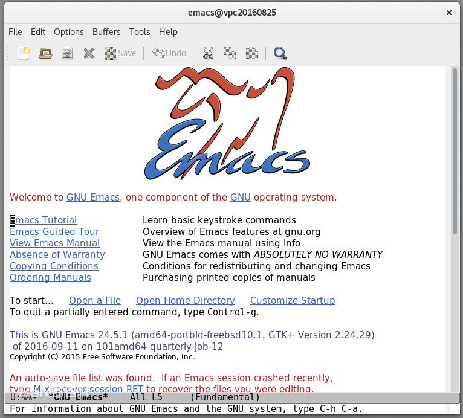

一、发展历程
Emacs在1970年代诞生于MIT人工智能实验室（MIT AI Lab）。在此之前，人工智能实验室的默认编辑器是一个叫TECO（Text Editor and Corrector）的行编辑器。TECO将击键、编辑和文本显示按照不同的模式进行处理。在TECO上击键并不会直接将这些字符插入到文档里去，必须先输入一系列相应的TECO指令，而被编辑的文本在输入命令的时候是不会显示在屏幕上的。
1970年代初，Richard Stallman访问Stanford AI Lab时见到了那里的"E" editor。这种编辑器有着所见即所得的直观特点，深深打动了Stallman。后来Stallman回到MIT，那时候MIT AI lab的黑客Carl Mikkelsen 已经给TECO加上了称作“Control-R”的编辑显示模式，使得屏幕能跟随用户的每次击键刷新显示。Stallman重写了这一模式，使它运行得更有效率，后来又加入了宏，允许用户重新定义运行TECO程序的键位。
这一新版的TECO立刻在AI实验室流行开来，并且很快积累起了大量自定义的宏，这些宏的名字通常就以“MAC”或者“MACS”结尾，意为“宏”（macro）。两年后，Guy Steele承担起统一当时存在的各种键盘命令集的工作。最终由Stallman完成了这一任务，包括一套扩展和注释新的宏包的工具。这个完成的系统被称作EMACS，代表“Editing MACroS”。
最初的Emacs同TECO一样只能运行在PDP-10系统。Emacs虽然是在TECO的基础上发展起来的，不过它已经足以被认为是一个新的文本编辑器了。很快，Emacs就成为ITS上的标准编辑程序，接着由Michael McMahon移植到Tenex和TOPS-20系统上。
|
二、功能
Emacs不仅仅是一个编辑器，他是一个整合环境，或可称它为集成开发环境，这些功能如让使用者置身于全功能的操作系统中，在基于编辑器的功能基础上，Emacs自行开发了一个“bourne-shell-like”的shell: EShell。
Emacs还可以：收发电子邮件、通过FTP/TRAMP编辑远程档案、通过Telnet登录主机、上新闻组、登陆IRC和朋友交流、查看日历、撰写文章大纲、对多种编程语言的编辑、调试程序、结合GDB/EDebug等、支持C/C++/Perl/Python/Lisp等等、玩游戏、计算器、记日记、管理日程/Task/ToDo/约会等、个人信息管理、目录管理、文件比较、阅读info和man文档、浏览网站、为各种程序（TeX等）提供统一的操作界面。
|
Emacs界面：

|